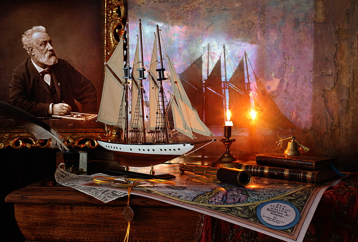
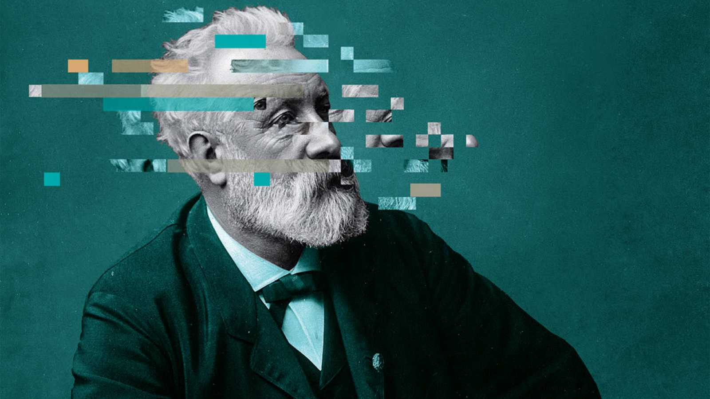

Contactanos +58 424 6802599
Julio Verne fue un destacado escritor francés del siglo XIX, nacido el 8 de febrero de 1828 en Nantes, Francia, y fallecido el 24 de marzo de 1905 en Amiens, Francia. Es conocido como uno de los padres de la ciencia ficción, y sus obras han sido traducidas a numerosos idiomas y disfrutadas por lectores de todo el mundo.
Su carrera literaria comenzó con la publicación de relatos cortos, pero su fama se consolidó con la serie de novelas que conforman su "Viajes extraordinarios". Estas obras fueron escritas con un estilo detallado y preciso, basado en rigurosas investigaciones y avances científicos de la época. Algunas de sus obras más emblemáticas incluyen:
"Cinco semanas en globo" (1863): Su primera novela de la serie de viajes, donde explora África en un globo aerostático.
"Viaje al centro de la Tierra" (1864): Una emocionante aventura que narra el viaje de un profesor y su sobrino a través de un volcán hacia el interior de la Tierra.
"De la Tierra a la Luna" (1865): Describe la misión de un grupo de hombres para viajar a la Luna en un proyectil impulsado por un gigantesco cañón.
"Veinte mil leguas de viaje submarino" (1870): Una obra pionera que sigue las aventuras del Capitán Nemo y su submarino Nautilus.
"La vuelta al mundo en ochenta días" (1873): Sigue al caballero inglés Phileas Fogg mientras intenta dar la vuelta al mundo en el plazo mencionado.
"Miguel Strogoff" (1876): Una novela de aventuras que relata el viaje de un mensajero a través de Rusia para advertir al zar sobre una conspiración.
"La isla misteriosa" (1875): Narra las peripecias de un grupo de náufragos que deben sobrevivir en una isla desierta.
"Viaje al Centro de la Tierra", la novela de Julio Verne publicada en 1864, sigue la emocionante aventura del profesor Otto Lidenbrock, su sobrino Axel y su guía Hans. Inspirados por un manuscrito antiguo, emprenden un peligroso viaje hacia el interior de la Tierra a través de un volcán islandés. Con ingenio y valentía, enfrentan desafíos naturales y descubren paisajes asombrosos, criaturas prehistóricas y océanos subterráneos. A medida que se adentran en las profundidades, experimentan la pérdida del sentido del tiempo y desafían la muerte en numerosas ocasiones. La travesía se convierte en una carrera contra el tiempo para escapar y regresar a la superficie. Finalmente, logran salir victoriosos y regresan a la superficie, con un inolvidable recuerdo de su audaz odisea al corazón desconocido de nuestro planeta.
"5 semanas en globo", la novela de Julio Verne publicada en 1863, sigue las aventuras del intrépido Dr. Samuel Fergusson, su fiel criado Joe y el audaz explorador Dick Kennedy. Con el objetivo de explorar África y descubrir nuevos territorios, emprenden un emocionante viaje a bordo de un globo aerostático especialmente diseñado. A medida que surcan los cielos africanos, enfrentan desafíos peligrosos como tormentas, tribus hostiles y paisajes extremos.
A lo largo de su viaje, el equipo se maravilla con la diversidad de la naturaleza, encontrándose con majestuosas cataratas, vastas llanuras y desiertos ardientes. A pesar de las dificultades, el ingenio y la valentía de los aventureros les permiten superar obstáculos y continuar con su misión.
El relato destaca la curiosidad humana y el espíritu de exploración, así como la amistad y la camaradería entre los protagonistas. Al final de su asombroso periplo, el equipo logra regresar a su punto de partida, con la satisfacción de haber vivido una de las mayores hazañas en la historia de la exploración.
"De la Tierra a la Luna", la novela de Julio Verne publicada en 1865, narra la emocionante historia de un ambicioso proyecto científico y espacial. Después de la Guerra Civil estadounidense, el Gun Club, un grupo de entusiastas balísticos liderados por el presidente Barbicane, se propone enviar un proyectil a la Luna. Con la ayuda del audaz artillero Nicholl y el excéntrico capitán Murchison, el equipo trabaja arduamente para diseñar y construir la gigantesca bala que los llevará al espacio.
La novela explora los desafíos técnicos y científicos que enfrentan, así como el entusiasmo y la determinación de los personajes involucrados. Tras el emocionante lanzamiento desde Florida, la bala, con tres intrépidos astronautas a bordo, se dirige hacia la Luna. Aunque enfrentan algunos contratiempos durante el viaje, logran realizar un aterrizaje exitoso en el satélite, dejando al lector con la incógnita de su destino y las posibilidades infinitas del espacio exterior.